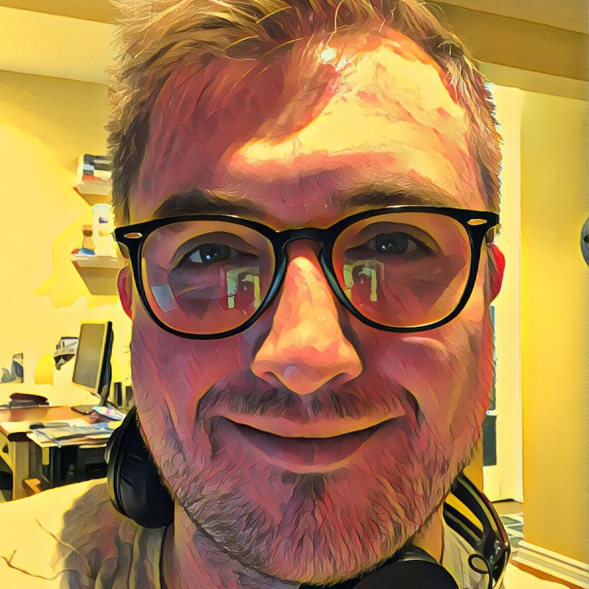

Home
About
Resume
Projects
Music
Elijah Ward
Full Stack Developer

I am a Full Stack Developer with 2 years of full-time experience graduating in June, 2019 with an Honours BSc in Computer Science from the University of Western Ontario.